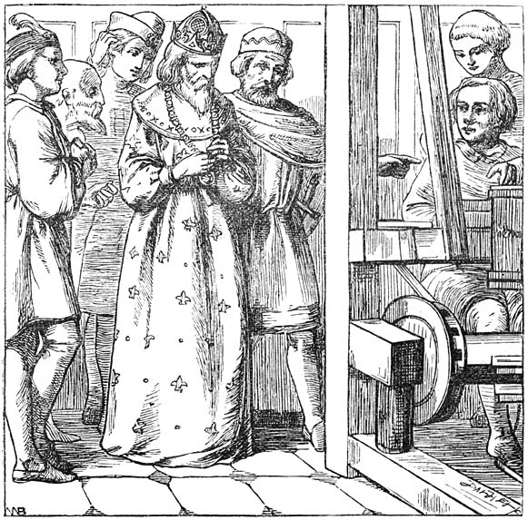

The Emperor's New Closure
Functional Programming in Javascript

Javascript / ECMAScript 5
Only the good things about Javascript
Concentrating on the core language
- ... not the many, many libraries
- ... or ECMAScript 6
- ... or prototype OO
- ... or javascript-as-bytecode
Programming in Javascript doesn't make you a bad person
Functional Programming
Preaching to the converted
- First class functions
- Higher-order functions
- Pure functions: containment of side-effects
- Composable, Optimizable, Reason-able!
Is Javascript a Functional Programming Language?
No.
- First class functions: YES
- Higher-order functions: YES
- Pure functions: NO
- Side effects (DOM, Globals, AJAX ...)
- Optimization limited
Can we benefit from functional style in Javascript?
Yes.
- Elimination of repetition
- Reduction of variable scope
- Preference for pure functions
Built-in Higher Order Functions — 1
map, filter, forEach, some, every, reduce
- Take a function as a parameter
- Run the function on each element of an array
- Collect the results
var lowercase_words = words.map(String.toLowerCase);
Built-in Higher Order Functions — 2
map, filter, forEach, some, every, reduce
- Take a function as a parameter
- Run the function on each element of an array
- Collect the results
function add(a, b) { return a + b; }
var sum = numbers.reduce(add, 0);
Built-in Higher Order Functions — 3
map, filter, forEach, some, every, reduce
- Take a function as a parameter
- Run the function on each element of an array
- Collect the results
function is_odd(n) { return n % 2 == 1; };
if (numbers.every(is_odd) {
/* ... */
}
Built-in Higher Order Functions — 4
Real Programmers can write Forth in any language ...
function add(a,b) { return a + b; }
function is_odd(a) { return a % 2 != 0; }
function square(a) { return a * a; }
var sum_of_squares_of_odds = numbers.filter(is_odd)
.map(square)
.reduce(add, 0);
Asynchronous Functions — 1
Are we there yet?
document.getElementById('foo').onclick =
foo_click_handler;
var xhr = new XMLHttpRequest();
xhr.onreadystatechange = function () { /* ... */ }
setTimeout(do_something, 300000);
Asynchronous Functions — 3
Working out the details of what happened:
Sometimes it is obvious ...
var button = document.getElementById('foo');
button.onclick = function () {
/* button has been clicked */
}
Sometimes less so ...
Variable scoping in Javascript — 1
Function scoping
function () {
var foo;
// foo and bar are in scope.
function bar() {
// foo and bar are still in scope.
}
}
Variable scoping in Javascript — 2
Function scoping
function () {
var foo;
// foo and bar are in scope.
// but bar is 'undefined'.
var bar = function () {
// foo and bar are available in here.
}
}
Closures — 1
function outer_function() {
var captured_variable = 0;
function inner_function() {
captured_variable += 1;
}
}
Closures — 2
Simple loop ...
function sum(numbers) {
var total = 0;
for (var i=0; i<numbers.length; i++) {
total += numbers[i];
}
return total;
}
Closures — 3
Using forEach
function sum(numbers) {
var total = 0;
function add_to_total(n) { total += n; }
numbers.forEach(add_to_total);
return total;
}
- Separation of loop ("forEach") from accumulation ("add_to_total")
Returning functions — 1
function raise_to_power(x) {
return function (y) {
return Math.pow(x, y);
}
}
var sum_of_squares = numbers.map(raise_to_power(2))
.reduce(add, 0);
Returning functions — 2
function get_name(u) { return u.name; }
function get_age(u) { return u.age; }
functoin get_hat_size(u) { return u.hat_size; }
function get_shoe_size(u) { return u.shoe_size; }
var shoe_sizes = users.map(get_shoe_size);
Returning functions — 3
function get_property(prop_name) {
return function (x) {
return x[prop_name];
}
}
var hat_sizes = users.map(get_property('hat_size'));
var shoe_sizes = users.map(get_property('shoe_size'));
Returning functions — 4
function by_property(prop_name) {
return function (a,b) {
if (a[prop_name] < b[prop_name]) return -1;
if (a[prop_name] > b[prop_name]) return +1;
return 0;
}
}
bills.sort(by_property('date_due'))
members.sort(by_property('last_name') ||
by_property('first_name'))
Asynchronous Closures — 1
Don't count your chickens ...
function lookup_name(name) {
do_asynchronous_lookup(name, function (result) {
if (result) {
return result.name;
}
});
}
This isn't going to work
Asynchronous Closures — 2
Don't count your chickens ...
function lookup_name(name) {
do_asynchronous_lookup(name, function (result) {
if (result) {
return "Are you still listening?";
}
});
return "hang on, I'm not ready yet!";
}
Asynchronous Closures — 3
... until they call you back.
function lookup_name(name, callback) {
do_asynchronous_lookup(name, function (result) {
if (result) {
callback(result.name);
}
});
}
AKA Continuation Passing Style
Asynchronous Closures — 4
... do another lookup ...
function lookup_stuff(id, callback) {
do_asynchronous_lookup(id, function (result1) {
if (result1) {
do_another_lookup(result1.related_id, function (result2) {
if (result2) {
callback(result1, result2);
}
});
}
});
}
Asynchronous Closures — 5
... yet another lookup ...
function lookup_stuff(id, callback) {
do_asynchronous_lookup(id, function (result1) {
if (result1) {
do_another_lookup(result1.related_id, function (result2) {
if (result2) {
yet_another_lookup(result1.postcode, function(result3) {
if (result3) {
callback(result1, result2, result3);
}
});
}
Asynchronous Closures — 6
... oh no not another lookup!
function lookup_stuff(id, callback) {
do_asynchronous_lookup(id, function (result1) {
if (result1) {
do_another_lookup(result1.related_id, function (result2) {
if (result2) {
yet_another_lookup(result1.postcode, function(result3) {
if (result3) {
oh_no_not_another_lookup(result3.code, function (result4) {
if (result4) {
// etc ad nauseum
Asynchronous Closures — 7
function run_in_series(functions, callback) {
var i = 0;
function inner_callback() {
if (i >= functions.length) callback();
else functions[i++](inner_callback);
}
}
run_in_series(
[ do_asynchronous_lookup, do_another_lookup,
yet_another_lookup, oh_no_not_another_lookup ],
now_go_do_something_else
);
Asynchronous Closures — 8
function run_in_parallel(functions, callback) {
for (var i=0; i < functions.length; i++) {
functions[i](inner_callback);
}
var callback_count = 0;
function inner_callback() {
callback_count++;
if (callback_count == functions.length) {
callback();
}
}
}
Objects using Closures — 1
Encapsulation
function Person(name, email) {
return {
get_name: function () { return name; }
get_email: function () { return email; }
}
}
var p = Person('Nick', 'nick@mnemote.com')
p.get_name()
Nick
Objects using Closures — 2
Inheritance
function Employee(name, email, number) {
var self = Person(name, email);
self.get_number = function () { return number; }
return self;
}
var e = Employee('Nick', 'nick@mnemote.com', 107);
e.get_name()
Nick
e.get_number()
107
Closures — 4
Partial Application
function partial(func) {
var outer_args = [].slice.apply(arguments, [1]);
return function () {
var inner_args = [].slice.apply(arguments);
return func.apply(this,
outer_args.concat(inner_args));
}
}
Lazy Iterables
function fibonnaci_generator() {
var a = 0, b = 1;
return function () {
b = a + b; a = b - a; return b;
}
}
var fib_iter = fibonnaci_generator();
for (var i=0; i<15; i++) {
print(fib_iter());
}
Trampolining
bouncing tail calls ...
Current support for Tail Call Optimization is poor
function trampoline(thunk) {
// thunk is an array of (next_func, arguments...)
while (thunk[0]) {
thunk = thunk[0].apply(null, (thunk.slice(1))
}
return thunk.slice(1);
Javascript Objects Are Not Dictionaries! — 1
Carthago Delenda Est
var word_count = {};
var words = ["foo", "bar", "constructor"];
for (var i=0; i<words.length; i++) {
word_count[words[i]] =
(word_count[words[i]] || 0) + 1;
}
console.log(word_count)
Object {foo: 1, bar: 1,
constructor: "function Object() { [native code] }1"}
Javascript Objects Are Not Dictionaries! — 2
Carthago Delenda Est
var is_admin = {'alice': true, 'bob': true};
if (is_admin[username])
console.log("Welcome, administrator " + username);
Welcome, administrator hasOwnProperty
Try dictionary.js
Summary
- Javascript may be awful, but it can also be awesome
- If you're going to write Javascript, it might as well be
awesome Javascript
- Unfortunately, the language doesn't distinguish for you
{kind=link}